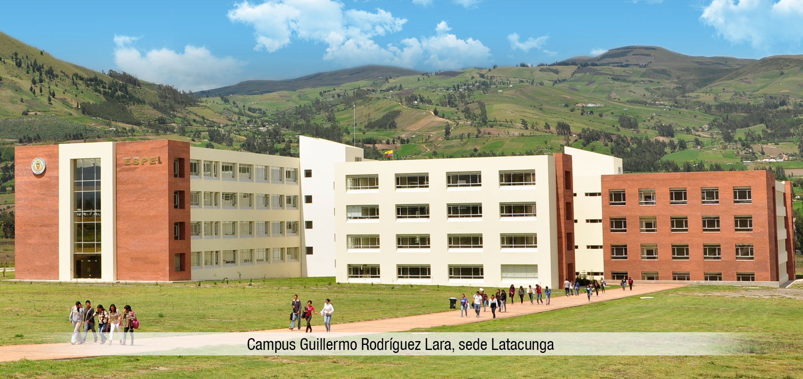

Acerca de nosotros

La Universidad de las Fuerzas Armadas ESPE tiene su origen cuando el 16 de junio de 1922 se crea la «Escuela de Oficiales de Ingenieros», mediante Decreto del Presidente de la República, Dr. José Luis Tamayo, publicado en el Registro Oficial 521; en vista de la necesidad de tecnificar los mandos en las especialidades de ingeniería y artillería el 22 de octubre de 1936, durante la Presidencia de Federico Páez, se cambia el nombre por «Escuela de Artillería e Ingenieros». Al ampliar su pensum académico y nivelarlo con las demás universidades ecuatorianas, en 1948 se la denominó Escuela Técnica de Ingenieros. Ante la crisis universitaria del país y las necesidades de las Fuerzas Armadas, en 1972 el Gral. Guillermo Rodríguez Lara, Presidente de la República abre las puertas para que ingresen estudiantes civiles.
Debido al crecimiento de la población estudiantil se crean facultades, institutos y centros para atender las necesidades del país; por lo que en 1977 se transforma en Escuela Politécnica del Ejército (ESPE), su configuración y programas de estudios académicos fueron revisados por la H. Cámara Nacional de Representantes, que al dictar la Ley de Universidades y Escuelas Politécnicas en mayo de 1982 la incluyó con toda justicia y derecho, en la enumeración de centros de educación superior, méritos que se refuerzan al dictarse la Constitución Política el 10 de Agosto de 1998 y al promulgarse la Ley de Educación Superior en el Registro Oficial No. 77 del 15 de mayo del año 2000.
El 13 de junio del 2001, el señor Presidente Constitucional de la República, Dr. Gustavo Noboa aprueba el nuevo Estatuto de la Escuela Politécnica del Ejército, mediante Decreto Ejecutivo N° 1585, que se encuentra publicado en el Registro Oficial N° 349 del 18 de junio del 2001. El decreto de creación ratificaba que los títulos concedidos por la ESPE se equiparaban con los otorgados por otras universidades y escuelas politécnicas. Paralelamente para satisfacer las necesidades de estudios de militares y sus familias se incluyeron las carreras a distancia en ciencias administrativas, mediante centros de apoyo que se abrieron en la gran mayoría de provincias del país. La población de estudiantes militares y civiles crecía considerablemente y de igual manera, el prestigio académico y la capacidad profesional de sus graduados; siendo en 1996 reconocida por el Consejo Nacional de Universidades y Escuelas Politécnicas (CONUEP).